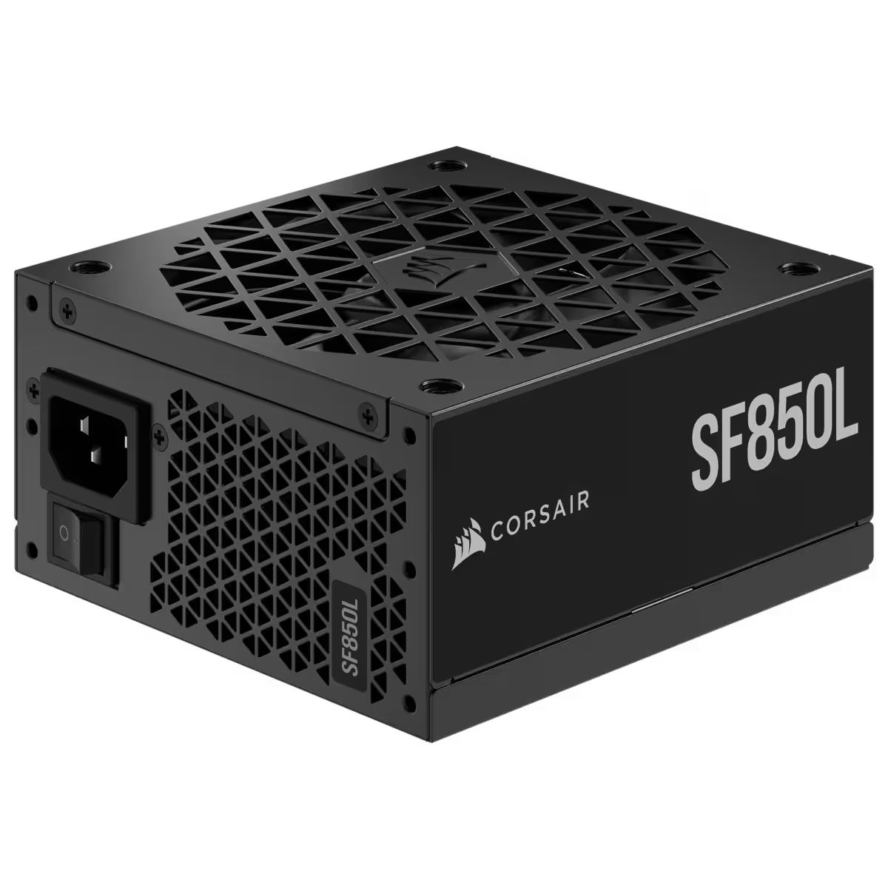

|
|
| FORM PEMBELIAN KOMPUTER DISINI!! |
PSU SFX
|
PSU SFX (Small Form Factor) adalah power supply yang dirancang khusus untuk sistem komputer dengan ukuran casing kecil, seperti PC mini-ITX. SFX lebih kompak dibandingkan dengan PSU ATX, dengan ukuran yang lebih kecil namun tetap mampu menyediakan daya yang cukup untuk sistem yang lebih ringkas. PSU SFX biasanya digunakan dalam build PC yang memprioritaskan ukuran dan portabilitas, seperti HTPC (Home Theater PC) atau sistem PC gaming mini. Meskipun ukurannya lebih kecil, PSU SFX dapat menawarkan kapasitas daya yang sebanding dengan PSU ATX, dengan beberapa model yang dapat mencapai daya hingga 600W atau lebih. Keunggulan utama PSU SFX adalah kemampuannya untuk menyediakan daya dalam form factor yang jauh lebih kecil. Dengan desain yang lebih kompak, PSU ini membantu menghemat ruang di dalam casing mini yang terbatas. Namun, karena ukurannya yang kecil, efisiensi pendinginannya juga seringkali menjadi tantangan, sehingga produsen PSU SFX sering menambahkan sistem pendinginan aktif, seperti kipas yang lebih kecil atau desain ventilasi yang lebih baik untuk menjaga suhu tetap rendah. |
 |